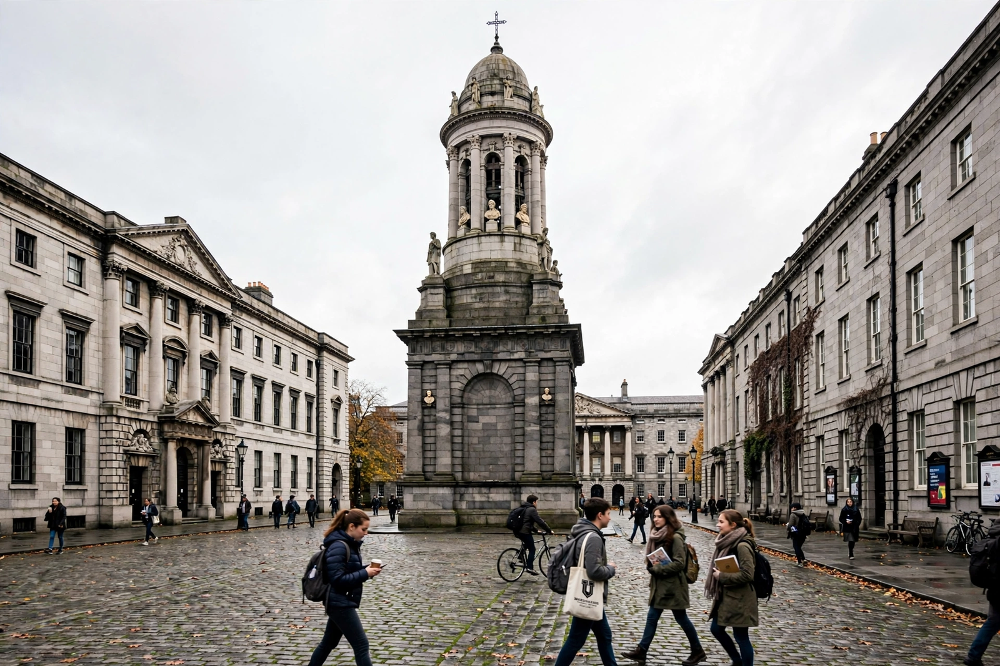

Trinity College Dublin
| Trinity College Dublin | |
|---|---|
 | |
| Motto | Perpetuis futuris temporibus duraturam ("It will last into endless future times") |
| Established | 1592 |
| Founder | Queen Elizabeth I |
| Type | Public research university |
| Provost | Linda Doyle (since 2021) |
| Students | c. 18,000 |
| Location | College Green, Dublin, Ireland |
Trinity College Dublin (Irish: Coláiste na Tríonóide, Baile Átha Cliath), officially the College of the Holy and Undivided Trinity of Queen Elizabeth near Dublin, is Ireland's oldest university and the sole constituent college of the University of Dublin. Founded in 1592 by Queen Elizabeth I on the site of a confiscated Augustinian priory, it was modelled on the collegiate universities of Oxford and Cambridge. Situated on a 19-hectare campus in the centre of Dublin, it is consistently ranked Ireland's leading university and among the top hundred worldwide.
History
For its first centuries Trinity was effectively the university of Ireland's Protestant Ascendancy; Catholics were admitted from 1793 but remained barred from scholarships, fellowships and chairs until an 1873 reform, and the Catholic Church discouraged attendance until 1970. Women were first admitted as full members in 1904. The college survived the upheavals of Irish history — its grounds were a strongpoint during the Easter Rising of 1916 — and expanded greatly in the later twentieth century, building the brutalist Arts Building and the Berkeley, Lecky and Ussher libraries.
Library and treasures
The college library is one of the world's great research collections, a legal-deposit library for both Ireland and the United Kingdom holding some seven million volumes. Its Old Library, built 1712–1732, houses the Long Room, a 65-metre barrel-vaulted chamber lined with 200,000 of the oldest books and marble busts of scholars. The library's most famous treasure is the Book of Kells, an illuminated Gospel manuscript created around 800 AD, displayed in the Old Library to hundreds of thousands of visitors each year alongside the Brian Boru harp, the emblem of Ireland.
Academics and alumni
Trinity is organised into three faculties and some two dozen schools, with strengths from nanoscience (the CRANN institute) to the humanities. Alumni include writers Jonathan Swift, Oscar Wilde, Bram Stoker and Samuel Beckett; philosopher George Berkeley; mathematician William Rowan Hamilton; physicist Ernest Walton, Ireland's only science Nobel laureate; and former Irish presidents Douglas Hyde, Mary Robinson and Mary McAleese. Its debating societies, the Phil and the Hist, count among the world's oldest student societies.